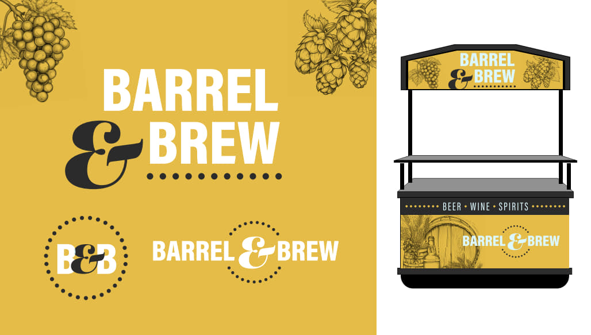
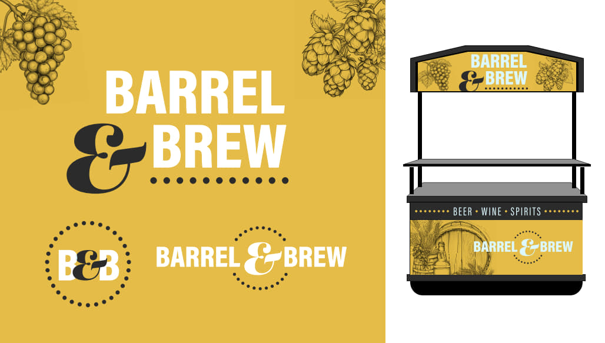 American Express Event Graphics
Client: American Express
Services: Motion Design, Event Graphics, Animation
Created dynamic motion graphics for American Express branded events, featuring smooth animations and premium visual treatment. The design leverages Amex's signature blue palette while introducing kinetic energy through layered geometric patterns and fluid transitions that capture attention on digital displays.
Challenge: Design event graphics that maintain brand consistency while standing out in high-traffic environments.
Solution: Developed looping motion graphics with bold typography and abstract geometric elements that create visual interest without overwhelming the core messaging, optimized for various screen formats and viewing distances.


 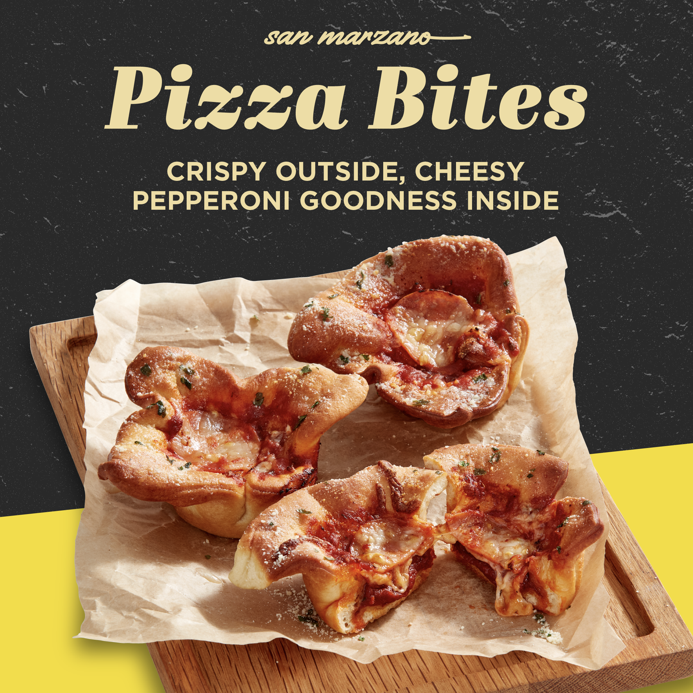 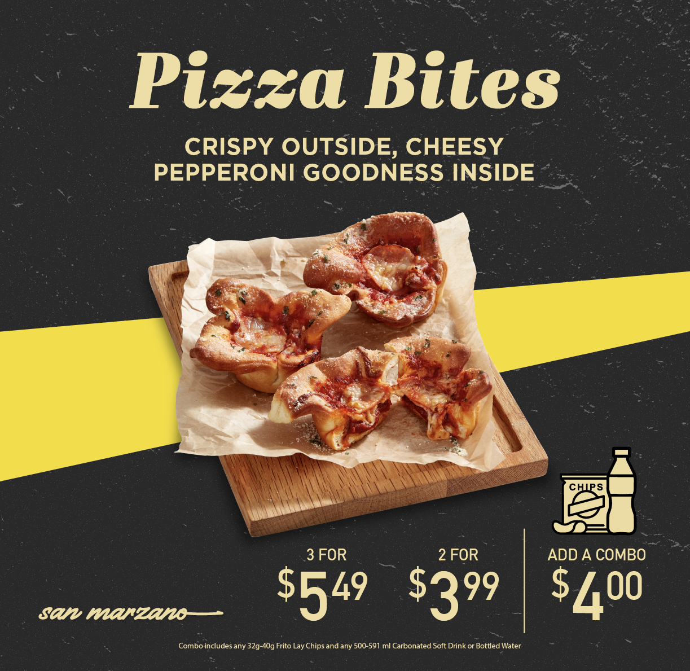 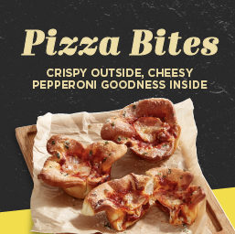
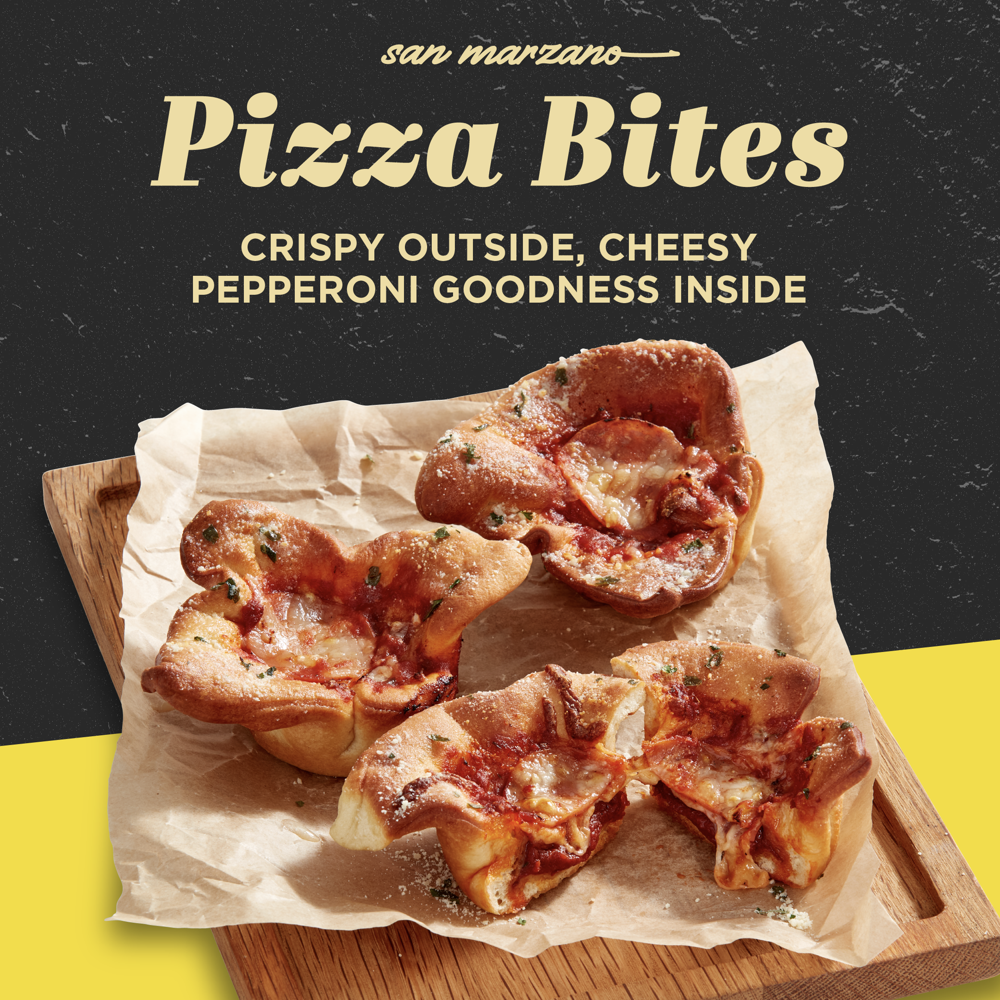 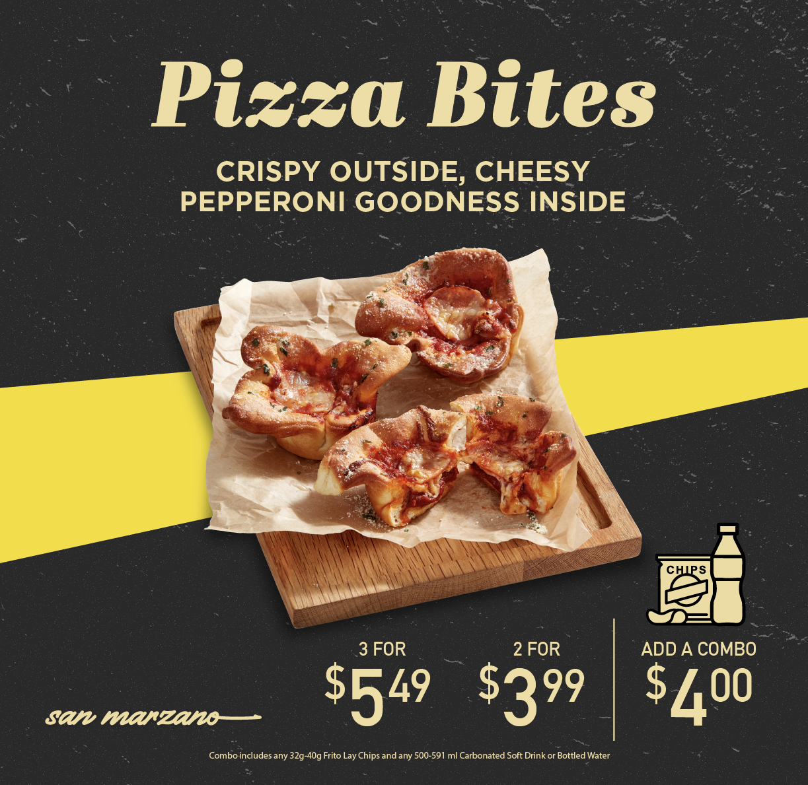 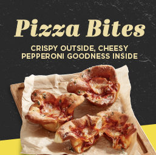  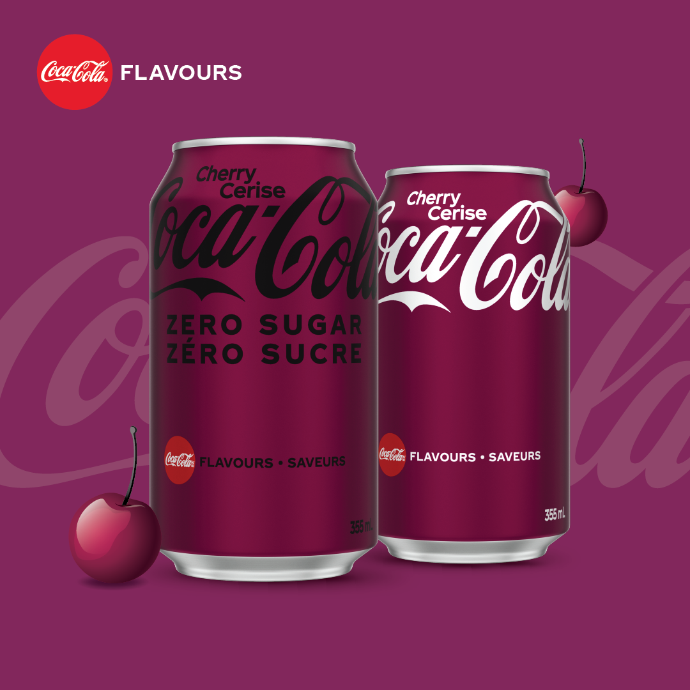
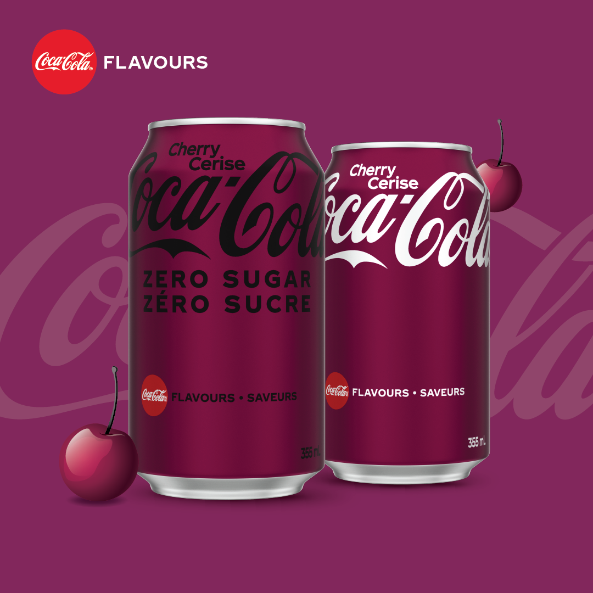 


 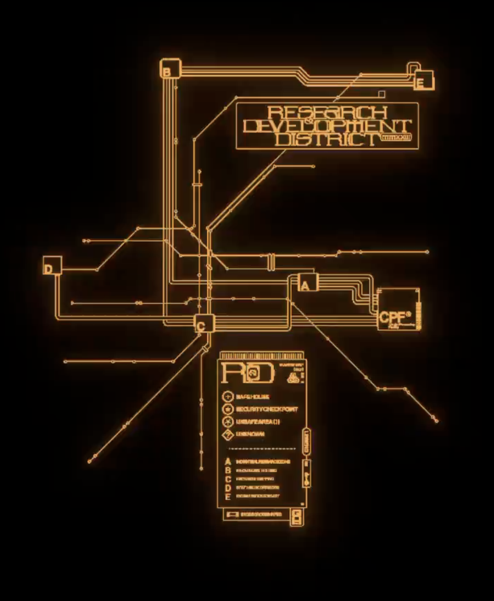
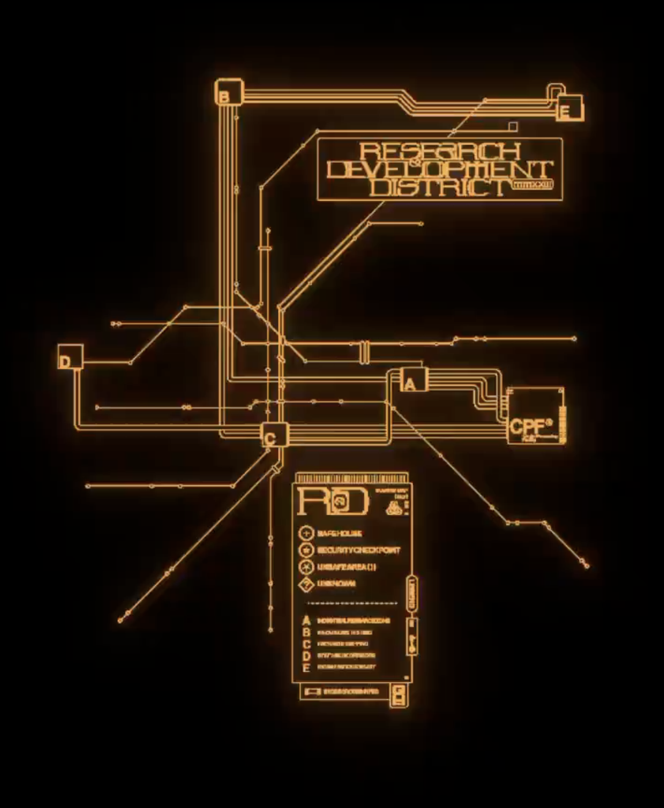  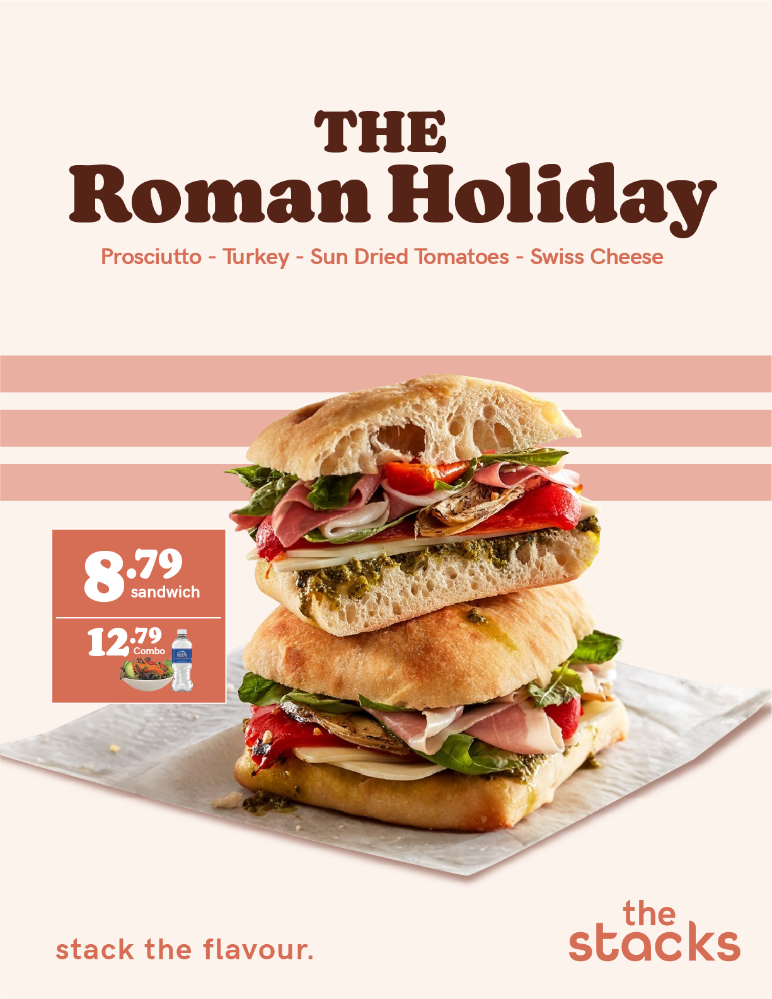
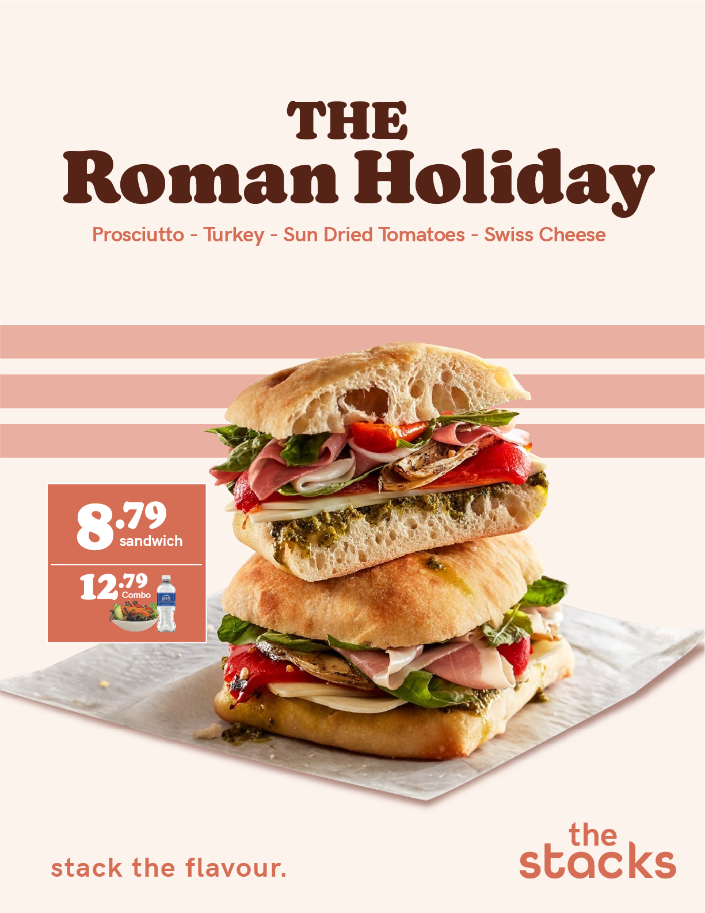